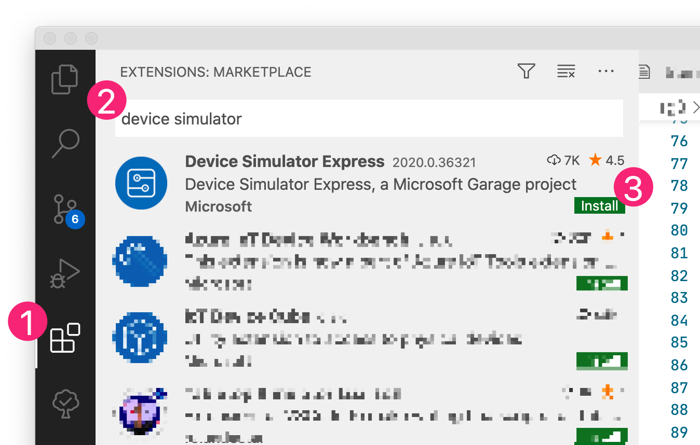
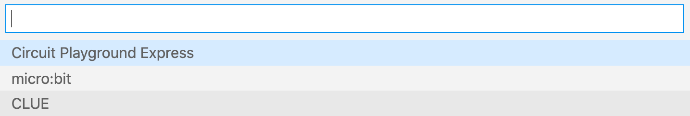
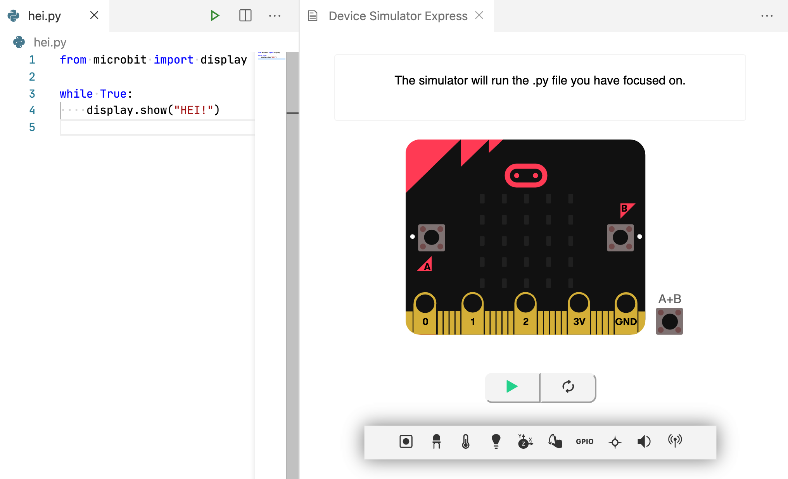
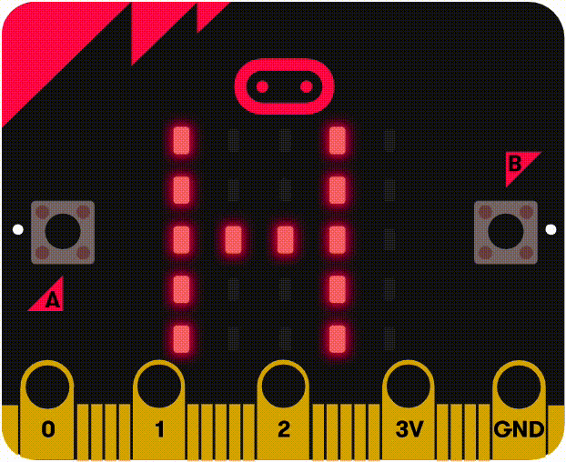
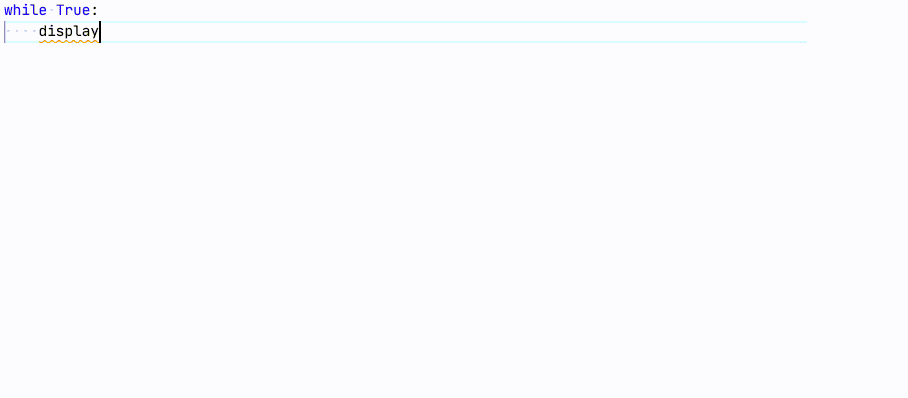
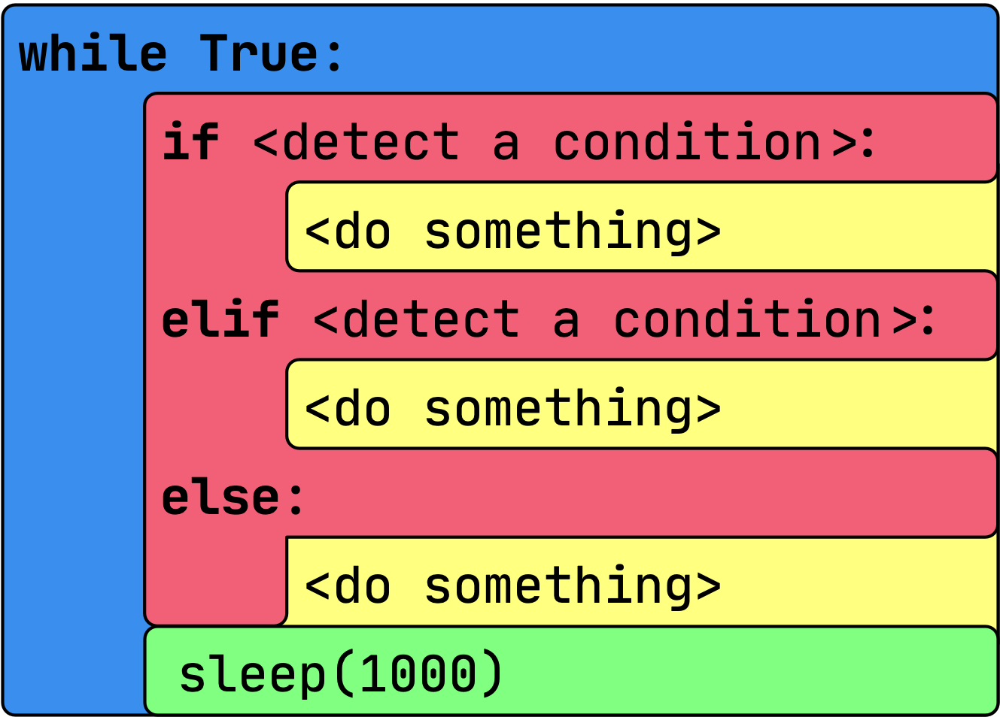

Create a folder for this week’s lab, like ttm4175-iot-1, and open this folder in VS Code.
Install the Device Simulator Express
Install the device simulator express extension. This also installs other required Python extensions. You can later check out the documentation. There is also a special tutorial for coding Python.
Click on the side bar for extensions.
Search for the device simulator.
Click Install.

Device Simulator Commands
VS Code has a Command Palette, which you can open using the following keyboard shortcuts:
On Windows: Ctr-Shift-P
On Mac: Cmd-Shift-P
For the device simulator, we will use two commands, one for creating new files and for opening the simulator.
When you run one of these commands, the device simulator asks you which device it should simulate. You can select between three different devices:
The BBC micro:bit
The CLUE
The Circuit Playground Express

Run a Test Program
Create a file hei.py with the following content:
from microbit import displaywhileTrue: display.show("HEI!")
Open the device simulator with the command from above, and select the micro:bit as device. You should see the simulator to the right side of the editor, like this:

When you now click the start-button under the device, it should blink like this:

Get the program to run on the simulator.
Remove the while-loop, so that only show() remains. (Adjust the indentation.) What happens?
Controlling the Device
The microbit has several electronic components that you can interact with. It’s, of course, more fun to interact with the real device, but the simulator is doing a good job at providing access to most of the electronic components. (And the Python code is the same.)
To interact with the electronic components, we use a code library, also called a Python package This is a set of Python code that provides an interface to the Microbit. Such an interface is also called an API, or application programming interface.
Go through the description of the components below, step by step.
For each component (like button,…) make yourself familiar with the user interface of the simulator.
Have a look at the API description by following the link and explore some of the examples.
Feel free to try out some of the examples. (We will do three of them later.)
In the end, you should “feel home” with the API.
Buttons
The Microbit has two buttons, A and B which can also be pressed at the same time.
In the section above, we showed you a couple of functions that you can use to control the Microbit. Whenever you do programming, exploring an API will be an important part of your work. There are several strategies to explore an API, which you will also mix as you go along.
Step 1: Find out which functions you need
First you need to find out which functions there are at all, and how they are called. For that, you have several options:
Look at a tutorial or read a book, which presents you a couple of functions and how to call with some examples, like we did above.
Read the code documentation, which sometimes also provides examples and overview explanations.
Search on the web.
Step 2: Find out how to use the function
Once you first know which function you need to use, you need to figure out how to use it. This means, which parameters are there and what do they do. You can figure out these more detailed questions in different ways:
Browsing an API documentation, like when you follow the links to the functions above. Such API documentation is often generated by extracting the comments in the source code, and for good libraries they should give you a complete picture.
Tool Support as offered in Visual Studio offers auto-completion. Just place your cursor after the dot of a variable. If the tool can infer which type the variable has, and if it finds the source code for the library where that type is defined, it can show you a popup window that explains the function call. You can also trigger the popup window by pressing Shift-Space.

Experience Helps…
After some time, you will also become more experienced with APIs, and sometimes you can guess which functions there probably are and how they are most likely called. In that case, you can start typing and look in the auto-completion for something that matches.
After you finished the other tasks below, reflect on how you manage to use the API for using the components of the Microbit. What was easy? What is challenging? What helped?
Application Examples
Some of the applications of an IoT device follow a very simple programming pattern, in which it waits for a condition to be true, and then does something. This is illustrated in the code skeleton below:

The outer while loop keeps the device running. As soon as you reach the end, it starts again at the top of the loop.
The if-statement checks for one or more conditions. It can for example read the temperature sensor, ask if a button was pressed or a gesture detected.
Depending on the detected case, the device can react with different actions, like showing something on the display.
The sleep statement lets the device pause for a bit. It specifies a number of microseconds that the device does nothing and waits before it goes into the next iteration and starts again at the top of the while-loop. The sleep is not necessary for all cases, but can be useful when you show something on the display and keep it visible for some time. In a real device that is powered by a battery, sleeping also helps to preserve energy. (This is usually implemented with a different method than sleep as shown here, but the principle for the code is the same.)
Let’s use this application pattern in some examples. In the following, we show you some of the ideas of the Microbit documentation. Go through these examples step by step. For each example, do the following:
Sketch a solution individually first, then together in your team.
Make it run.
Compare your solution with the one given in the documentation.
Show how the applications work with a short sequence of screenshots. Describe what the code does.
Nightlight
Detect that it is getting dark and turn on the display.